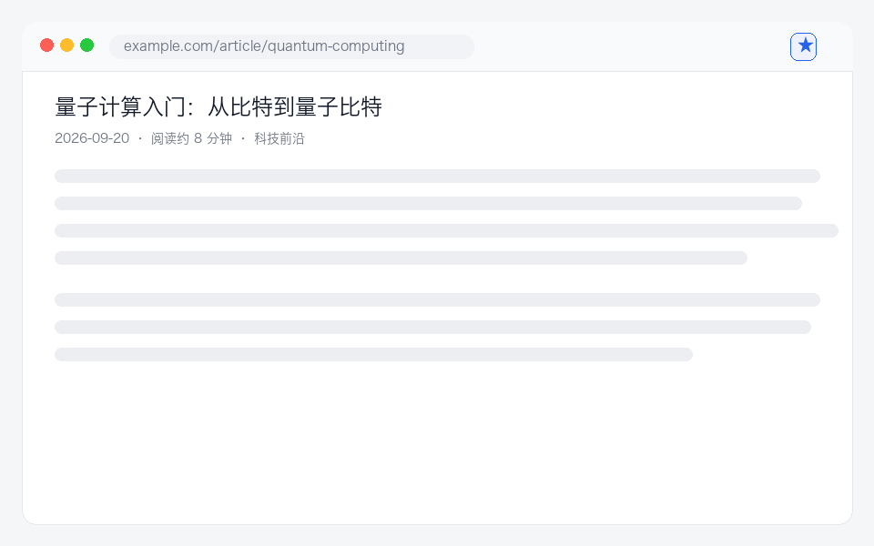

零账号 · 纯本地 · 跨三浏览器
划词即存，导出即用
ClipKeep 是一款跨 Chrome / Edge / Safari 的轻量划词收藏插件。选中文字一键存本地，导出 Markdown，还能净化网页专心阅读。不联网、不上传、开箱即用。

为高效留存而生
学生整理网课重点、上班族积累周报素材，一个插件全搞定。
✂️
划词收藏
选中任意文字，浮动条一键收藏，可加备注与标签，不打断阅读。
🔒
纯本地存储
数据全存在浏览器本地，无账号、无后端、永不上传，隐私零妥协。
📝
导出 Markdown
单条或批量导出 .md，无缝归档到 Obsidian / Notion / GitHub。
📖
净化阅读
一键移除广告、侧边栏、导航，只留正文，还能整页收藏。
🏷️
标签分类
给收藏打标签、按标签筛选、全文搜索，多也不乱。
🌙
深色模式
明暗主题随心切换，偏好本地记忆，夜间护眼。
三步用起来
无需注册，装上即用。
划选文字
在任意网页选中你想留存的内容。
点「★ 收藏」
浮动条或右键菜单一键保存到本地，可加备注标签。
导出 / 复用
打开弹窗搜索、筛选、复制，或批量导出 Markdown。
🌐 Chrome
🧩 Edge
🧭 Safari 16.4+
安装
开发者模式加载已解压的扩展，无需构建。
# 1. 获取代码
git clone https://github.com/liuxin1985/ClipKeep.git
# 2. 打开 chrome://extensions（Edge 为 edge://extensions）
# 右上角开启「开发者模式」
# 3. 点「加载已解压的扩展程序」→ 选择 ClipKeep/extension 目录
# 工具栏出现 ★ 即成功 🎉常见问题
更多问题欢迎提 Issue。
数据会上传吗？
不会。ClipKeep 纯本地离线运行，无任何网络请求，卸载前请自行导出备份。
为什么某些页面划词没反应？
浏览器安全限制：chrome://、扩展商店页等不会注入脚本，属正常现象。
能跨设备同步吗？
暂不含云端同步（保持零后端）。可在路线图上关注，欢迎点 Star 催更 ⭐。